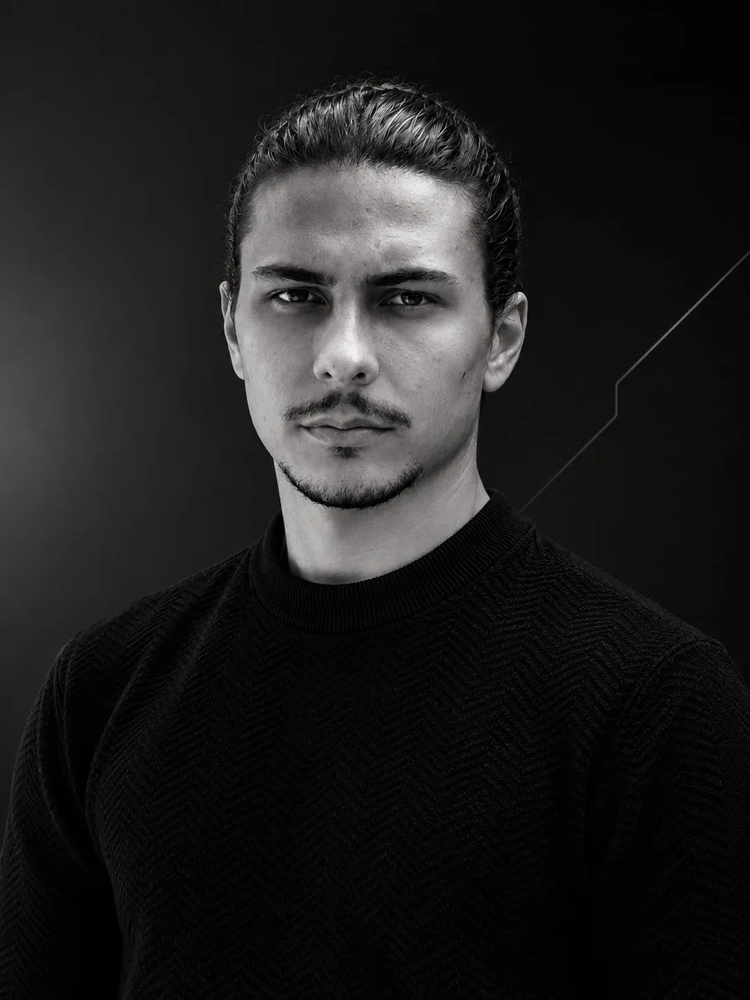

Bernardo Knoblauch
Portfólio
Projetos e trajetória
→
Blog
/bek.no.lo.ˈʒi.a/
→
Bekno & Co.
Para o trabalho que você precisa feito
→
VamosMarcar
Agendamento para barbearias e salões
→
Contato
WhatsApp
→